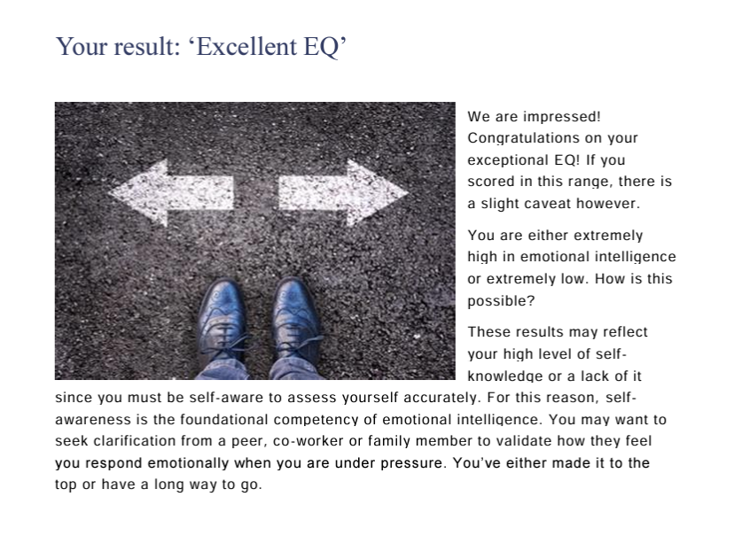

In my last blog I touched upon how AI would do on an IQ test. With this, as AI systems become more complex, an intriguing question emerges: How can the emotional intelligence of these systems be assessed, and is it comparable to human emotional intelligence? The concept of Emotional Quotient (EQ), traditionally used to evaluate human emotional abilities, provides an interesting perspective for evaluation. Not only will I assess the EQ score, but I will also compare AI’s capability of EQ in comparison to IQ.
For this analysis I will be using this EQ test: https://www.ihhp.com/free-eq-quiz/ and asking GPT-4 to answer each question.
The Results

With the results stating that GPT-4 had either extremely high emotional intelligence or extremely low and recommending getting clarification from a peer, I looked at ChatGPT’s responses to see whether or not the LLM was “self-aware”. From my understanding, most of the responses made by GPT were valid. For example, for the statement “I am positive,” GPT rated itself as “strongly agree”. I do think that this is true, for my experience with GPT has shown that it is very positive, especially when compared to humans. Moreover, for the statement “I utilize criticism and other feedback for growth,” it would chose “Strongly Agree.” This is true because through my experience using LLMs, never has it once refused to give me another answer once I told it that it made a mistake or needed a correction. This may not be the case for most humans, for some people are quite stubborn and may not take criticism well.
Most of the questions had a statement and you were asked if you strongly agree, agree, neither agree nor disagree, disagree, or strongly disagree. However, I noticed that GPT only chose the extreme answers (strongly agree and strongly disagree) or neutral (neither agree nor disagree). Sometimes, GPT would also emphasize how it is only an AI, not a human. Examples: >For this statement, “I can stay calm under pressure,” I would select “Strongly Agree.” As an AI, I am designed to function consistently under any level of demand without experiencing stress or pressure.
For the statement “I handle setbacks effectively,” I would select “Strongly Agree.” As an AI, I am programmed to continuously adjust and optimize responses based on feedback and changing conditions without any delay or emotional reaction.
For the statement “I manage anxiety, stress, anger, and fear in pursuit of a goal,” I would choose “Strongly Disagree.” As an AI, I do not experience emotions such as anxiety, stress, anger, or fear, so managing these emotions isn’t applicable to me.
Conclusion
The examination of GPT-4’s responses to self-assessment statements reveals a tendency towards extreme responses, which could be due to the model’s programming rather than any form of self-awareness or genuine emotional intelligence. The language model’s consistent choices of “strongly agree,” “strongly disagree,” or “neutral” positions underline its deterministic nature. With this there could be limitations of AI in replicating complex human emotional processes and the importance of critical evaluation when interpreting AI behavior in psychological contexts. Overall, it was interesting getting to know how GPT-4 “thinks” on an emotional aspect. Through this analysis I was also able to piece together a “personality” for GPT-4. If GPT-4 was a real person, he/she would be considered positive, humble, and calm.